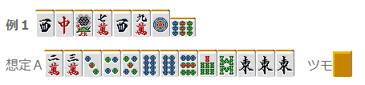
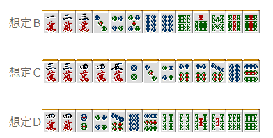
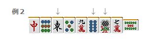
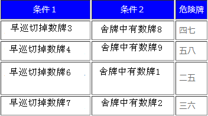
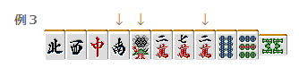
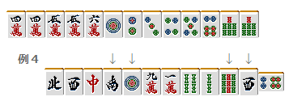
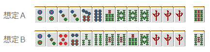
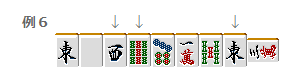

【日本麻雀讲座译文】防守14—立直的读牌（一）
【日本麻雀讲座译文】防守14—立直的读牌（一） · 原网页
译文与整理说明
保留原中文署名和正文。牌图转录如复用已验收 PDF，逐图保留原候选与像素核对出处。自动校对不等于用户审核。
免责声明：原文段落
以下文章的著作权等各种权利归原作者所有，翻译 By SeventhTG（XD）。如果你喜欢本文并有幸让你产生了转载的想法，请注明原作者、原文地址以及译者，谢谢。原文段落
原文地址：http://beginners.biz/reach/mamori14.html ------------------------------------------------------------------------------------ 立直的读牌1： 虽说是立直的读牌，并不是传说中读出对手听什么牌的高难度技术。 毫不夸张的说，读出立直者听什么这是不可能的。 原文段落

完整牌例文字与牌编码
上排左侧标签：例1。牌序从左至右：3z 7z 1s 7m 3z 9m 1p 9p；第8张9p横置。 下排左侧标签：假设A。手牌从左至右：2m 3m 3p 4p 5p 8p 8p 9p 7s 8s 1z 1z 1z。手牌右侧为“摸入”标签，标签右侧另有一张牌背朝外的牌。 原图未显示的信息：假设A右侧“摸入”标签后的牌仅显示牌背，无法确定其牌面编码。
比如例1的立直的手牌一向听的情况如图所示（假设）。 但是，我们是不能断定立直时所听的是什么牌。 摸到14万的话就听69索； 摸到69索的话就听14万。 听牌时的有效牌叫做“入目”， 正式因为有了入目，所以不能够做到一点读。 而且本来例1的手牌，除了现物之外，其他的牌危险程度都差不多。 随便给几个例子吧。图B~D的情况都是不能否定的。 原文段落

完整牌例文字与牌编码
上排左侧标签：假设B。牌序从左至右：1m 2m 3m 3p 4p 5p 8p 8p 6s 7s 8s 9s 9s。 中排左侧标签：假设C。牌序从左至右：3m 3m 4m 4m 5m 2p 3p 4p 6p 6p 7p 8p 9p。 下排左侧标签：假设D。牌序从左至右：4m 4m 2p 4p 7p 8p 9p 4s 4s 5s 5s 6s 6s。
结果就是，不要有“去判断立直者听什么”这种错误的想法。 “立直的听牌是不能读出的，也没有必要去读”，这个认识是立直读牌的第一步。 这样一来，我们读牌到底读什么呢？ 其实是“牌的危险度”和“牌的安全度”。 能够在攻守两方面灵活运用读牌，我觉得就是一位一流的雀士。 特别是寻找安全牌的技术是非常重要的，这对放铳率有着很深的影响。 理论、总结： 读出立直者听什么牌是不可能的，也没有这个必要。 对于有一定舍牌特征的立直，能够把握“危险的牌”和“相当安全的牌”才是真正的读牌。 下面，举几个“危险度比较高的牌”的例子。 ------------------------------------------------------------------------------------ 五的里筋 ------------------------------------------------------------------------------------ 有关里筋其他很多网站有许多记述，这里就不再详细说明了。 在实战中，里筋危险度比较高的就是“五的里筋”和“间四间” 过去常常说“早巡切5，就很可能是14或者69听牌。” 虽然还不知道统计的结果，不过这也是可以容易感觉到的东西。 原文段落

完整牌例文字与牌编码
左上方标签：例2。牌序从左至右：7z 9p 1z 5p 9m 8p 1s 7m 5s；第9张5s横置。 三支向下箭头分别位于第3张1z、第6张8p、第7张1s的正上方。
例2的手牌，比较早得切出了5饼是一个特征。 9饼已经被切出了，所以14饼的危险度就比较高了。 实际的手牌如下： 原文段落
完整牌例文字与牌编码
单排手牌，从左至右：1m 1m 3m 4m 5m 2p 3p 2s 2s 3s 3s 4s 4s。
当然听索子或者万子的可能性也是很高的， 但是14饼也要看做是危险的牌。 “早巡切了数牌5”这是非常重要的信息。 正是因为早巡切了利用价值很高的数牌5， 所以不难想象，他手牌里有23或者78的搭子。 即使是立直时切出数牌5， 我们也很难判断是以什么牌型切出来的。 是浮牌？还是57搭子摸到8之后才打出的？还是455切掉5来固定两面？ 总之有着很多的可能性。 例2立直时切出了5索， 但也不能说69索比其他无筋的牌要危险。 总结、理论： 面对早巡切出了数牌5的立直， 就应该警戒数牌5对应花色的14和69. ------------------------------------------------------------------------------------ 间四间（注：有关间四间，在福地诚与凸东北撰写的《科学麻将中》指出了其错误性，这里各位读者可以查阅资料了解。） ------------------------------------------------------------------------------------ 间四间读作“aidayonken”,有以下四种情况。 原文段落

完整牌例文字与牌编码
| 条件1 | 条件2 | 危险牌 | | --- | --- | --- | | 早巡切掉数牌3 | 舍牌中有数牌8 | 四七 | | 早巡切掉数牌4 | 舍牌中有数牌9 | 五八 | | 早巡切掉数牌6 | 舍牌中有数牌1 | 二五 | | 早巡切掉数牌7 | 舍牌中有数牌2 | 三六 |
两张相差5的数牌的里筋就叫做“间四间” “早巡切掉”是关键词， 利用度比较高的34和67在早巡被切出是间四间的一个条件。 原文段落

完整牌例文字与牌编码
左上方标签：例3。牌序从左至右：4z 3z 7z 2z 1s 2m 7m 2m 8p 9p 8s；第11张8s横置。 三支向下箭头分别位于第4张2z、第5张1s、第8张2m的正上方。
（之后是摸切） 序盘是字牌的连切，所以第七巡的7万可以说是切的比较早的了。 而且2万也被切过，这里36万是万子的本线。 饼子和索子这里没有什么判断的材料，只能够认为所有的饼子和索子都是危险的。 实际的手牌如下： 原文段落

完整牌例文字与牌编码
上排手牌从左至右：4m 4m 5m 5m 6m 1p 2p 3p 4p 5p 6p 7s 7s。 下排左上方标签：例4。下排牌序从左至右：4z 3z 7z 2z 1p 9m 1m 4s 2s 9s 3z 6p；第12张6p横置。 下排四支向下箭头分别位于第4张2z、第5张1p、第10张9s、第11张3z的正上方。
（之后是摸切） 有一个常常被误解的东西，这里需要事先说明以下。 例4中58索是间四间的危险牌， 但是终盘切出的6饼并不能说明25饼是危险的。 如果是单纯的346饼的话，6饼应该被更早切出。 间四间确实是危险的， 但是不能正确掌握间四间的条件也是毫无意义的。 ------------------------------------------------------------------------------------ 被拆掉的两面搭子的里筋 ------------------------------------------------------------------------------------ 这是由“二度进张不利”的牌理反过来推导的逻辑。 原文段落
完整牌例文字与牌编码
左上方标签：例5。牌序从左至右：2z 3z 6z 8m 5m 1m 4z 3p 2p，共9张；第9张2p横置，无赤牌。 两支向下箭头分别位于第6张1m、第7张4z的正上方。
（之后摸切） 例5的立直很显眼的地方就是拆掉了23饼的两面搭子。 “正是因为拆掉了，所以才不会是14饼听牌啊”，这样的想法只是初学者的天真想法…… 实际上14饼才是关键啊，不是吗？ 原文段落

完整牌例文字与牌编码
上排左侧标签：假设A。连续排列的13张牌从左至右：2p 2p 3p 3p 7p 8p 7s 8s 8s 8s 7z 7z 7z；右侧间隔后另列1张9s。 下排左侧标签：假设B。连续排列的13张牌从左至右：2p 3p 5p（赤牌） 6p 3s 4s 5s 5s 7s 8s 7z 7z 7z；右侧间隔后另列1张5s。
想象一下A和B的两种牌型吧。 正是想避免二度进张，所以才拆掉了23饼的搭子。 留下了146饼听牌的可能性。 这种拆掉两面搭子的立直，一定要对其筋保持警惕。 总结、理论： 拆掉两面搭子的立直，要小心其二度进张。 ------------------------------------------------------------------------------------ 拆掉嵌张搭子的立直的跨筋 ------------------------------------------------------------------------------------ 这种情况的条件比较复杂，但也是危险度非常高的情况。 从外→内拆掉嵌张搭子的立直，跨筋是危险的。 用文字说明有点难懂，我们来看看实际的例子吧。 原文段落

完整牌例文字与牌编码
左上方标签：例6。牌序从左至右：1z 5z 3z 9s 7p 1m 5s 1z 3m；第9张3m横置。 三支向下箭头分别位于第3张3z、第4张9s、第8张1z的正上方。
（之后摸切） 一眼看去没什么特征的舍牌，虽然无筋的牌都狠危险。 但是有一组危险等级更高的筋。 那就是25万。下面来说明理由。 这个立直拆掉了13万的嵌张搭子。 但是中间切掉了5索和东，所以不是单纯的拆掉嵌张搭子。 没有留下安全牌东，是因为手牌的需要。 也不像是摸到4万形成两面，因为要做两面的话，5索要优秀一些。 也就是说，从334万这种形里切出3万的可能性是很高的。 这种情况要是条件没有齐，或者是远离立直宣言牌拆掉的嵌张搭子，跨筋也不是那么危险的。 对立直危险牌的读牌这样的程度已经足够了， 更重要的还是下一节的“安全的情况”。 （待续）原文段落